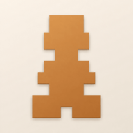

bito chessBito Chess now lives at bitochess.com. Everything you built is still right here, safe on this device — download it below, then bring it with you. Your access on the new site is free and permanent.
Download the repertoire, games, statistics and settings stored in this browser.
Make a free account on the new site, then bring your data with you.
Go to bitochess.comThen, once you're signed in: Settings → Backup & restore → Import, and pick the file you just downloaded.
Downloading only makes a copy — nothing on this device is changed or deleted.